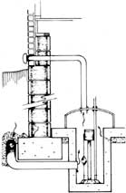
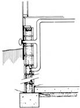
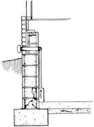
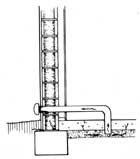
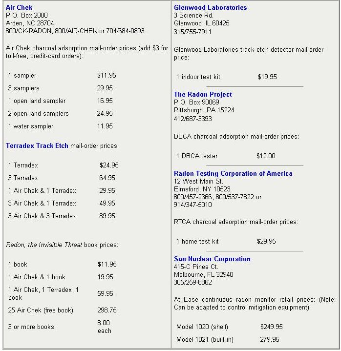

Radon
Up to 25 percent of all U.S. homes may have hazardous levels of this radioactive gas, including how bad, how to you get rid of it, where does it come from, do-it-yourself radon testing.
By the Mother Earth News editors
September/October 1987
Up to 25% of all U.S. homes may have hazardous levels of radioactive gas.
You're breathing it right now. Radon, an invisible, odorless, radioactive gas, is present everywhere in our atmosphere. A natural product of the breakdown of uranium, radon emanates from rock and soil but is usually so diluted by air that it poses a minimal health risk. Problems arise when humans construct radon traps - buildings - and then live in them.
Houses with dangerously high radon levels have been found in all 50 states. There's no question that some regions are more prone to radon problems than others, but no area is immune. And even the fact that a neighbor's home with similar construction has been tested and found to be safe is no guarantee that yours will receive a similar report.
As many as 10 million U.S. residences may have significant radon contamination, and there is now nearly universal agreement among experts that all homes should be tested. If you haven't yet had your home examined for radon, read the sidebar on testing and pick a service.
Finding that your home does have a radon problem is no cause for panic. But, depending on the concentration, it may call for prompt action. First, retest thoroughly. Use multiple detectors - both carbon and alpha track - and place them so as to get a better idea of where the concentrations are highest in your house. Your state radiation protection agency or the commercial tester may provide information or assistance in proper screening. If the problem is confirmed, it's time to get to work.
How Bad?
The results of radon tests are usually expressed in units called picocuries per liter of air (pCi/L). Without getting into the physics of radiation, that means that there are about two radioactive disintegrations of radon 222 in each liter (9/10 quart) of air every minute. As you can see, this has nothing directly to do with alpha particles bombarding lung tissues and causing mutations. However, through a complicated (and still controversial) process, health physicists can relate units of radioactivity to health risk.
RADON
It's the number-two cause of lung cancer deaths.
Among various public, commercial and international organizations, the call for alarm on radon comes at between two and 11 pCi/L, but the EPA says that you should take remedial action if the concentration exceeds four pCi/L. According to EPA scientists, over a lifetime that level of exposure will cause between 13 and 50 cancer deaths per 1,000 people - about three times the number caused by the average indoor level of 1.5 pCi/L. One laboratory, Air Chek, reports that about 25% of the homes it has tested have exceeded four pCi/L.
Since radon is assumed to cause some cancers at any detectable concentration, it would be ideal to eliminate it entirely from our homes. In practice, however, this is difficult, if not impossible, to achieve. Radon moves easily through the smallest of cracks and is able to penetrate (though slowly) concrete and other building materials. Efforts to reduce concentrations far below four pCi/L will probably be futile.
If your house has between four and 20 pCi/L, you should probably take action to reduce the radon levels in your house within two years. Ten pCi/L is said to be the equivalent of smoking a pack of cigarettes per day, and 20 pCi/L is the equal of two packs per day. Your risk of lung cancer death would be increased by about 7 1/2 and 15 times.
Should your home test at between 20 and 200 pCi/L, you should get busy within a few months. The lung cancer risk will have risen to as much as 75 times normal, the equivalent of puffing away on four packs per day. Houses with such high concentrations are relatively rare.
A few houses - mostly along the infamous Reading Prong in the Northeast - show concentrations greater than 200 pCi/L. At these levels there should be no pause for meditation. Spend a lifetime there, and as many as eight out of 10 of your family members can be expected to die of lung cancer.
Where Does the Radon Come From?
For the most part, radon enters a house because the pressure inside the building is lower than that of the radon-bearing earth resting against the floor and foundation. This pressure differential is caused by wind, changes in barometric pressure, temperature differences between inside and out, and temperature-induced stack effect (where warm air rises in the house to exit through the attic or second-story windows).
In some areas, water is also a significant source of indoor radon. Water from wells 150 feet deep or less may become contaminated with radon from surrounding rock. There is some risk of gastrointestinal cancer from drinking water with radon, but the release of radon to the air as the water is used is usually a greater concern.
Building materials also release some radon, though they're usually not the major contributors in seriously contaminated homes. Of all common building materials, granitic rock is the most highly charged with uranium, but even in a house with a rock fireplace, the internal sources are unlikely to amount to more than 10% of the radon total. However, if the structure was inadvertently built with concrete mixed with phosphate rock or other highly contaminated aggregate, very high radon concentrations are likely.
How Do You Get Rid of Radon?
Cracks as small as 1/128" - too tiny to see without an optical aid - are sufficient for radon to slip inside, so a typical house offers many possible openings. As a result, the radon concentration in your home is more affected by the amount of uranium in the rock and soil around it, and by pressure differential (the driving force), than it is by the inherent leakiness of the floor and walls.
Ventilation Techniques
Strategies for reducing high radon levels will usually have to go beyond mere caulking and will depend on the type of house and its features. The following material gives you an overview of some proven techniques for dealing with various problems. For more detail, write the Center for Environmental Research Information, Distribution, 26 W. St. Clair, Cincinnati, OH 45268, for a free copy of "Radon Reduction Techniques for Detached Houses."
Sealing. Although not a final solution, sealing entries is still the first step in radon mitigation, and if your home is only marginally above four pCi/L, this may be sufficient to bring the concentration below the threshold. Look for cracks in masonry floors and walls, gaps around plumbing runs that penetrate the walls or floor (including shower and toilet drains) and cold joints between slabs and footings. Enlarge the openings and clean them out with a wire brush and vacuum cleaner. Then fill them progressively with a flowable, gas-proof, nonshrinking silicone caulk.
Application of an epoxy sealant or waterproof coating to the inside of block walls will reduce the permeability of the material, lessening radon concentrations slightly. Sound poured concrete is too impermeable to bother with.
Sump pump ventilation. The sump pump is the single greatest offender when it comes to throwing the door wide open for radon. Sumps with underfooting connections to foundation drains are particularly good at collecting radon. An accompanying illustration shows a technique for sealing a sump pump housing and venting it to the outdoors by means of a fan. The fan for a sump-alone system should have a capacity of about 50 cubic feet per minute (cfm); for footing drain systems, 250 cfm or more may be needed. Because the fan operates in suction, it's very important that it and its plumbing be well sealed. The demands on the fan will be high, so be sure to get one that's capable. One source of appropriate fans is Kanalflakt, 1121 Lewis Ave., Sarasota, Fl 33577.
A well-sealed sump pump ventilation scheme can reduce even very high radon levels by better than 90%.
Block wall ventilation. Researchers have found that radon readily makes its way through the cold joint between a footing and a concrete block foundation. A hollow-block wall then offers a perfect path upward, and, in some older homes, the top of the block wall isn't capped. Radon then can slip past a poorly sealed sill and band joist and into the house. The tops of all block foundation walls (interior or exterior) should be sealed, but even after this is done, radon may make its way into the basement through cracks or mortar joints.
Two approaches to ventilating a block wall are shown in the illustrations. The simpler of the two has an individual pipe penetrating each section of wall (one four-inch plastic pipe every 24 feet). These runs are joined and feed to a single suction fan that pulls the radon outdoors. The other technique uses a plenum that's carefully sealed all along the base of the wall. The second system is thought to be somewhat more effective at creating a negative pressure under the slab (thereby preventing radon from entering the house), but both have shown greater than 90% effectiveness in overall radon reduction.
Under-slab ventilation. Just as a suction fan can be used to ventilate sump pumps or block walls, one (or more) fans can remove radon from beneath a concrete slab floor, as long as there's an adequately permeable gravel bed beneath the concrete. This approach is particularly good for new construction, since a labyrinth of perforated pipes can be laid under the slab.
Other Techniques
Ventilation. Indoor radon concentrations can be reduced by diluting the air in the house. The relationship is direct but nonlinear: If you double the air change rate, radon concentration will be cut by 50%; quadruple it, and the level will be cut by as much as 75%.
Because of the limitations of comfort and energy cost, ventilation without heat recovery is likely to be acceptable in only one form. If you're willing to seal off a crawlspace or basement from your living area, insulate the floor and ventilate the area below, you may achieve significant radon reductions inside the house.
Heat recovery ventilation (with an air-to-air heat exchanger) can be used to good effect in houses with low natural rates of air change. A typical 250 cfm unit, for example, could change the air in a 900-square-foot basement about twice per hour. If the original air change rate had been one-half per hour, that appliance would provide the ventilation. Radon in the basement (the major source leading to the house) would be reduced by 75%.
Outside air for appliances. Part of the depressurization inside a house (which draw radon into the building) is caused by appliances that use air. Examples include furnaces, woodstoves, water heaters, clothes dryers and exhaust fans. Though supplying these items with outside air directly may not reduce radon concentrations dramatically; doing so will have the additional benefit o1 making the house more comfortable.
Coping with hot water. Granulated, activated carbon water filters will readily remove radon. However, high rates of flow may overwhelm smaller residential filters. If a test turns up high radon levels in your water, you should probably look into a substantial whole-house system.
In the Meantime
There are also a few very simple - though not necessarily easy - things you can do to reduce the risk of radon. First, test different areas of the house; radon levels are seldom consistent throughout a building. Try to spend most of your time in the areas where radon concentrations are lowest. Second, smokers should either quit or move. Recent information suggests that radon may have a synergistic effect with cigarette smoke, increasing the risk greatly for smokers. In fact, Dr. Edward Martell of the National Center for Atmospheric Research is convinced that current EPA risk figures overestimate the hazard for nonsmokers by 600% and underestimate it for smokers - by 50%.
DO-IT-YOURSELF RADON TESTING
There are two radon-testing techniques suitable for homeowners to administer: charcoal adsorption and photo-etch. In addition, there is one consumer-priced continuous analyzer that provides three-stage alert of radon concentration. None of these methods should be assumed to offer the sort of accuracy possible with professionally operated, multithousand-dollar continuous analyzers. Largely because of the vagaries of exposure - controlled by amateurs, such as us - you should think of do-it-yourself testing only as a way to determine whether or not you have a radon problem.
Charcoal adsorption, in which radon attaches to charcoal in a canister or bag, is the most popular self-administered radon-testing method. The detectors are exposed for two to four days and mailed to the testing lab, where radioactive disintegrations are counted by sophisticated detectors. Track-etch type detectors record alpha particle movements on film. The detectors are exposed for 14 days to one year and mailed to the testing lab, where the impressions are observed through microscopes.
Charcoal has the advantages of being quick and inexpensive. Multiple testers can be used to sample different parts of the house. Alpha-track detectors give integrated readings of concentrations over time, potentially a more representative indicator of your average exposure. Though radon concentrations usually vary from both day to night and season to season, it's still possible that a short-term measurement could miss a temporarily high reading.
The EPA qualifies laboratories to do radon testing. You can safely assume that all labs that have passed EPA quality assurance offer about the same accuracy. Therefore, your decision should be based on service and price. At this point, over 200 firms have been qualified by the EPA to do radon testing. There's simply no way we can list them all, so we've selected the following firms that are well established in the mail-order radon-testing business. With the exception of Sun Nuclear, all prices include shipping, analysis and results.
|
Radon enters a home primarily through its floor and foundation, though building materials and water may also be sources. |
 DRAIN TILE AND SUMP VENTILATION |
 BLOCK WALL VENTILATION WITH PLENUM |
|
 BLOCK WALL VENTILATION WITH INDIVIDUAL POINTS |
 UNDER-SLAB VENTILATION |
 |
|
 |
 |
|